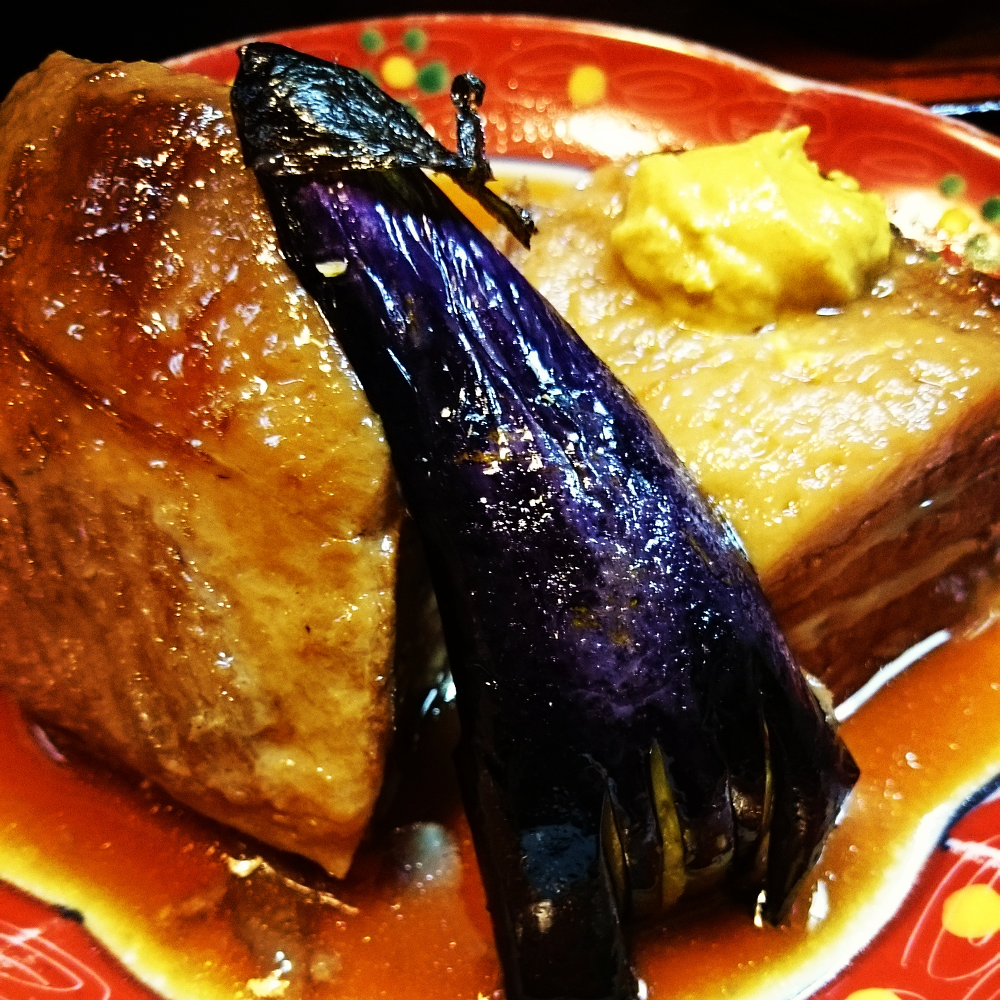
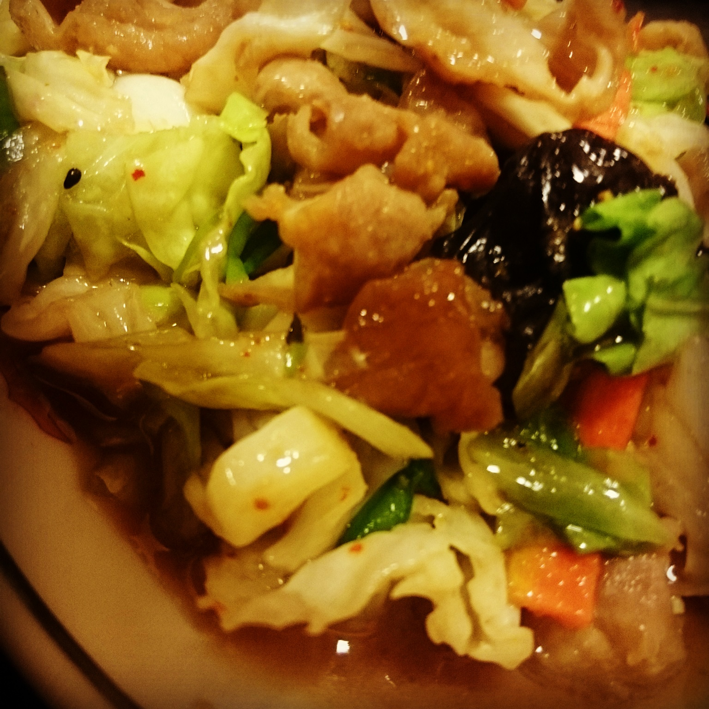
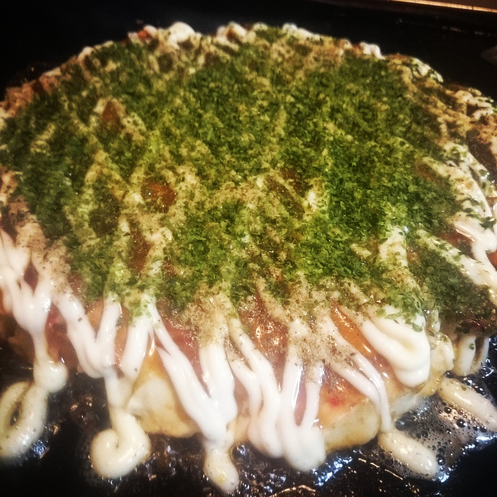
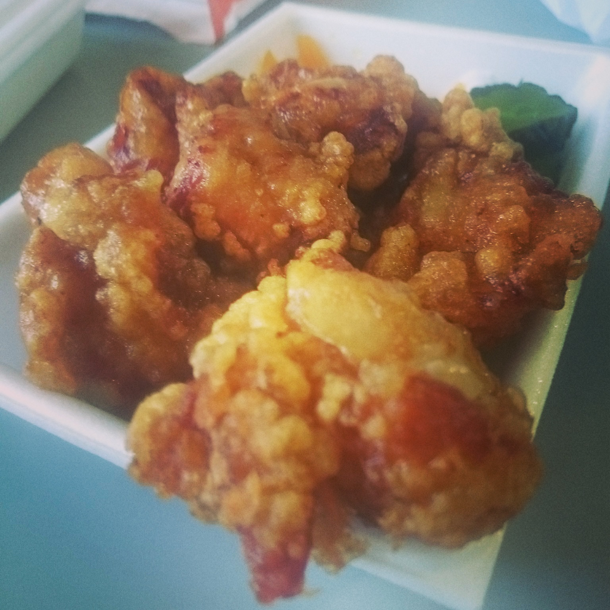
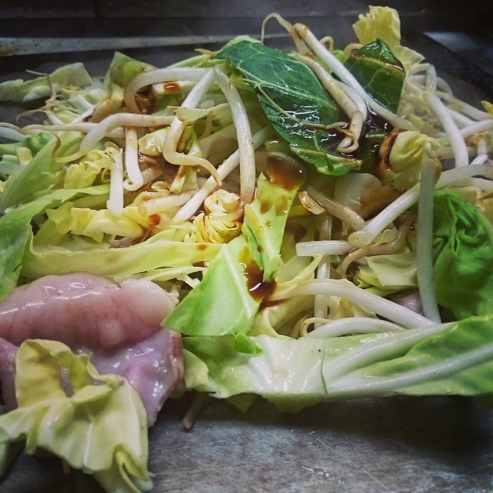
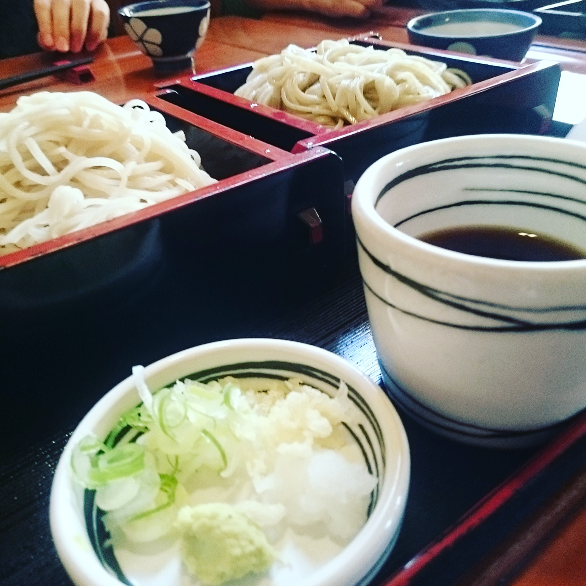

突然ですがみなさん
Suddenly, I want to ask you a question.
美味しいしたい、
美味しいしたくない？
Do you want to be happy, don't you?
というわけで...
For this reason,
リーズブナルな
(と自分が勝手に思っている)
会津の飯屋を淡々と紹介していきます。
I will be AIZU MESHI evangelist.
Caution!!
定休日や営業時間が変動している可能性があります。
Be careful of food porn!
Outline
- 渡
- 若大将
- 魚菜 KanPana
- 双月
- エルちゃん弁当
- 吉し多
- 皆川
- 椛
- 徳一
渡 -Watari-
- CATEGORY: 定食屋(和,洋)
- HOURS: 11:00-14:00/ 17:30-21:30
- CLOSED: 月曜日
- POINT: ご飯がおひつでくる

若大将 -Wakadaisho-
- CATEGORY: 中華屋
- HOURS: 11:30-15:00/17:30-21:30
- CLOSED: 月曜日（祝日の場合は翌火曜日）
- POINT: モツ野菜炒め定食, 大将(ダージャン)麺が個人的に好き

魚菜 KanPana(昼の部) -Uosai KanPana-
- CATEGORY: 昼のみビュッフェレストラン
- HOURS: 11:00-14:00/(夜もやってるよ)
- CLOSED: Webに掲載
- POINT: 時間制限なしのバイキング
双月 -Sogetsu-
- CATEGORY: お好み焼き屋
- HOURS: 13:00-21:00
- CLOSED: 不明
- POINT: 最後に出してくれる中華スープが体の芯に染み渡り最高

エルちゃん弁当 -Eruchan bento-
- CATEGORY: お弁当屋
- HOURS: 11:00-15:00/17:00-19:00
- CLOSED: 水曜日
- PIONT: から揚げ弁当最高

吉し多 -Yoshita-
- CATEGORY: 郷土料理
- HOURS: 11:00-14:00/17:00-22:00
- CLOSED: 不定休(主に日曜日)
- PIONT: 昼のみ馬刺し,桜握りランチセットが850円
皆川食肉店 -Minakawa meat shop-
- CATEGORY: 担々麺屋だったり鉄板焼き屋だったりする(本業は肉屋)
- HOURS: 11:00-14:00/17:00-22:30
- CLOSED: 月曜日(不定休とも聞いているので要出典)
- PIONT: お昼も良いが, 夜はコスパ最強

居酒屋 椛 -Momiji-
- CATEGORY: 居酒屋でありラーメン屋
- HOURS: 18:00-2:00
- CLOSED: Webに掲載
- POINT: こじんまりとしている, 油そばが最高
徳一 -Tokuichi-
- CATEGORY: そば・うどん
- HOURS: 11:30-15:00/17：00-20:30
- CLOSED: 月曜日
- POINT: 手打ちのそば・うどんがうまい

本日のLTのスライドです
あとでgithubにあげます...(間に合わなかった)